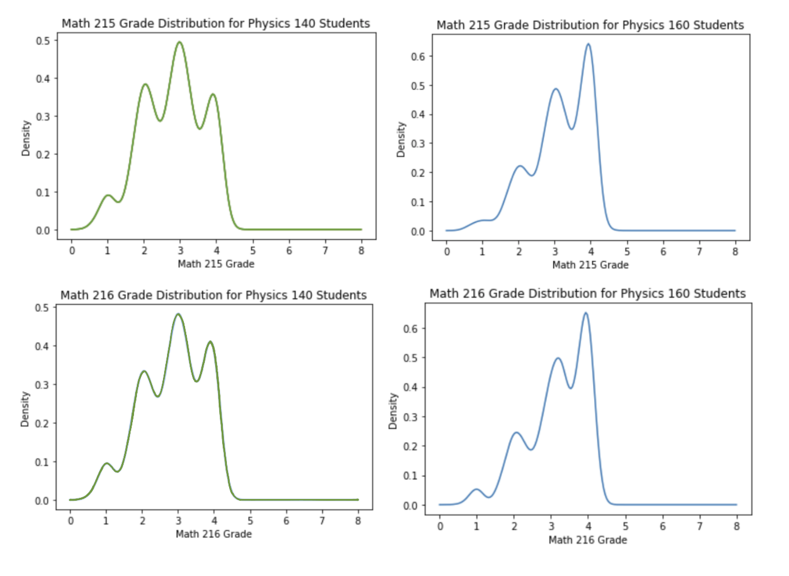

During my first two years of college, I worked at a research lab dedicated to learning analytics. I utilized programming tools like Python and R to analyze student data, recognizing trends and disparities that occurred and pinpointing what factors influenced these patterns.
Every year, tons of students from a variety of different backgrounds enroll in universities to attain a higher education. In order to accommodate for these differing people, universities have implemented both honors classes as well as honor programs that students can take or be a part of to demonstrate their academic competency while challenging themselves.
At the University of Michigan, students are given the opportunity to gauge their own learning and either join the honors program, which encourages students to consistently take honors classes, or take the honors version of large, introductory courses.
My aim was to determine whether there was a difference in student performance between students who took Physics 140 versus students who took Physics 160 (Honors version of Physics 140). To elaborate, here are the key differences between the two classes:
In order to learn more about each group of students, I utilized the Learning Analytics Data Architecture (LARC) and first filtered it to obtain all students who took either course. I then created two tables and seperated all the students based on which physics course they took. To get a general idea of the academic standing of each group of students prior to entering university, I performed multiple series of analysis (average, etc) on varying statistics, like ACT, SAT and AP scores.
To proceed, I then looked into how well each group of students performed in classes that most students from both groups took some time in their university career. I ordered the popularity/relativity of these courses by making a table of courses taken most often by Physics 140 students and another table of courses taken most often by Physics 160 students, and picked out the courses that appeared relatively high up in both tables. Within these shared classes, I specifically chose to analyze physics student performance in Multivariable and Vector Calculus (Math 215) and Introduction to Differential Equations (Math 216).
Top Physics 140 Classes
Top Physics 160 Classes
Overall, analyzing the data left me with many different discoveries. Looking at each groups' statistics before they entered college, they were very obviously different, making it clear that the background of the students varied quite a bit. One clear example was ACT scores. Both groups of students produced very obviously left skewed graphs which I attributed to the fact that the University of Michigan as a whole is already a fraction of higher achieving individuals. But between the two groups, the graph of Physics 140 students was definitely more bell-shaped with an average of 30.05 while the graph of Physics 160 students was more left skewed with an average of 32.18.
Physics 140 ACT Score Distribution
Physics 160 ACT Score Distribution
Looking at the various Physics AP test scores, I was met with similiar findings.
| Class | Physics One Advanced Placement Test | Physics Two Advanced Placement Test | Physics B Advanced Placement Test | Physics C Electricity and Magnetism Advanced Placement Test | Physics C Mechanics Advanced Placement Test |
|---|---|---|---|---|---|
| Physics 140 | 3.40 | 3.57 | 3.79 | 3.20 | 3.50 |
| Physics 160 | 4.14 | 4.14 | 4.49 | 4.29 | 4.47 |
Next, I looked at the mean grade for each class and conducted a two sample t-test to compare the two. The mean grade for Physics 140 was approximately a C (1.99) while the mean grade of Physics 160 was approximately a B+ (3.31). The t-test results show that the difference in means for the two classes is statistically significant at conventional levels of confidence.
However, I found the mean Physics 140 grade to be unusually low. Even with taking account the much larger population size, it still seemed a bit suspicious. So I decided to graph the the grade distribution of each class. As seen below, there is a very high spike at 0. Upon further inspection, I found that for many students, the number inputed for 'GRD_PNTS_PER_UNIT' was incorrect even though the official grade was right. For some reason, the grade the teacher inputed wasn't necessarily the same as the official grade put in the transcript. The other zeros were correct, being students who dropped the course or actually failed the class.
Physics 140 Grade Distribution
Physics 160 Grade Distribution
Though this was quite an important discovery, it was hard to correct for it because I was unable to get more detailed information regarding why the grades were misinputed. Since a lot of my analysis was quantitative, I was unable to use the letter grade column of the data. I decided to just note this down and keep it in mind in the rest of my analysis.
Next, I looked into how the performance of Physics 140 students compared to the performance of Physics 160 students in other classes. I proceeded with further analysis by graphing a Math 215 grade distribution of all students who took Physics 140 and another Math 215 grade distribution of all students who took Physics 160. I did the same with Math 216. These graphs showed how the two differing groups performed holistically as a group, but the information was still very broad and no significant conclusions could be made.
In order to thoroughly compare the two groups of people, I decided to further categorize each group of people based on the grade they received in each respective class into groups of those who got As, Bs, Cs, Ds, or Fs. I then paired the group of students who got a specific grade in Physics 140 with the group of students who got that same specific grade in Physics 160 and created a comparative grade distribution of what grades they received in a the shared classes. This would clearly show if there was a difference in student performance between students who took Physics 160 versus students who took Physics 140.